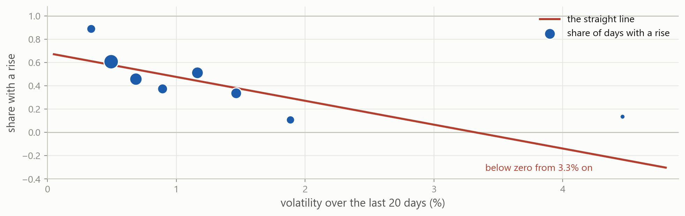
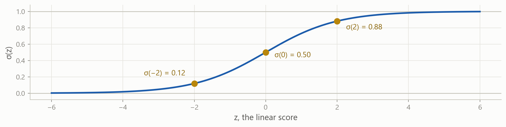
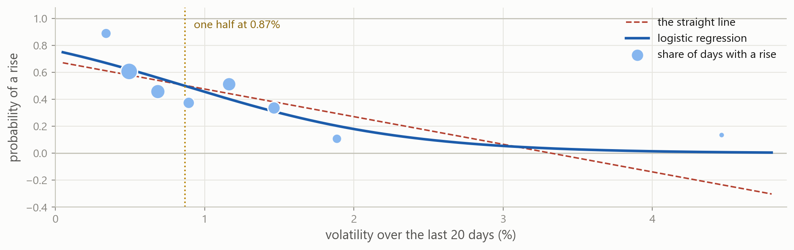
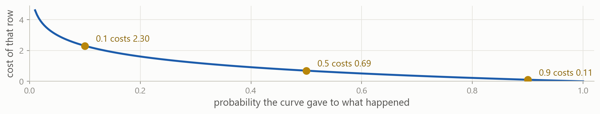
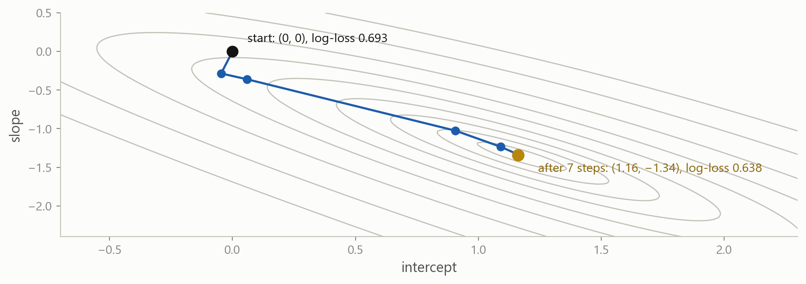
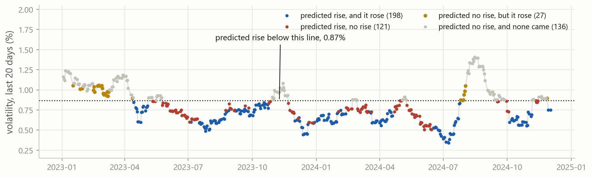
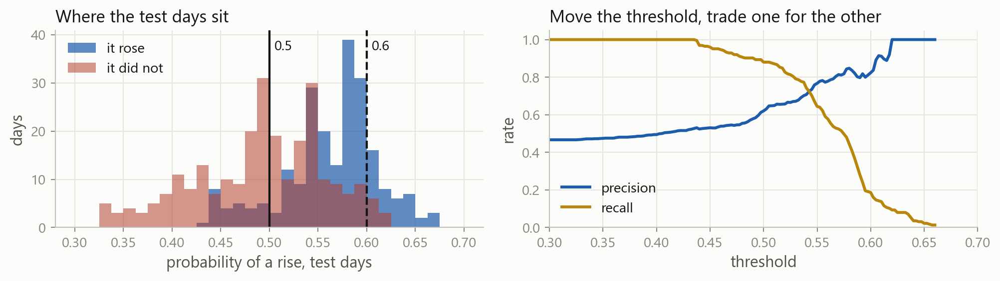
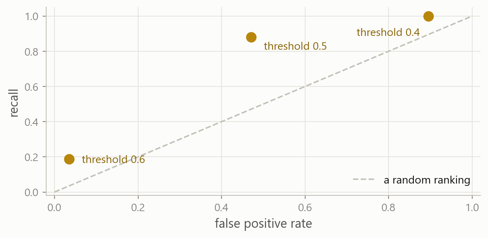
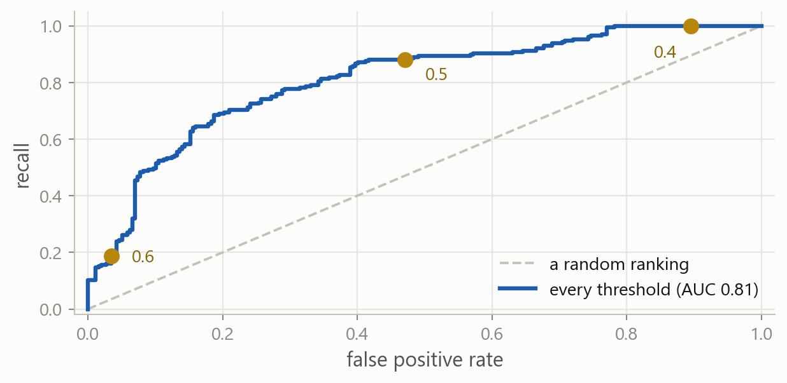
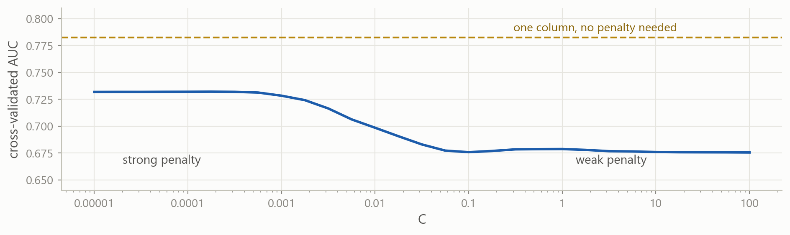

Machine Learning in Finance · Session 8
Three test RMSEs for the index’s volatility over the next 20 days, from a table of 19 columns. The 19 columns forecast worse than one until ridge shrank the coefficients, with alpha chosen by cross-validation.
The target was a number. This session gives the same table a target that is a label.
Will the market be more volatile next month than it was this month?
Why it matters options and hedges cost more once volatility has risen, so the decision to buy protection is made before the month starts
What you know today the 19 columns of the table: the index’s own volatility over six windows, its return over three, and the 20-day volatility of 10 stocks
One way to answer is to forecast the number, as before, and compare the forecast with this month’s volatility. This session makes the comparison itself the target.
One row per trading day, 19 columns that look back from that day, and vol_next, the volatility over the 20 days after it. The index is SPY, in percent.
The comparison is asked of every row and answers True or False; .astype(int) turns the answers into 1 and 0. The label is 1 when the 20 days after the row were more volatile than the 20 days before it. In what follows, a day whose label is 1 is called a day with a rise.
Training rows to the end of 2022 and test rows from 2023: 1,894 days to fit on and 482 to check on.
The label is 1 on 48 percent of the training days and 47 percent of the test days. Predicting 0 for every day is right on 53 percent of the test days, with no model at all. Every model has to beat that share.
The lecture introduces each of these. The exercises and the case are where you practise them.
Part 1
The regression fitted to the 0/1 label, and what goes wrong.
The target column holds ones and zeros, and .fit() treats them as numbers. The slope is negative: the higher this month’s volatility, the lower the fitted value.
Read the fitted value as the probability of a rise. Before running the cell, decide what it should give for a volatility of 4 percent, and whether a straight line can give that.
The index’s 20-day volatility was above 4 percent in March 2020.
The line reaches zero at a volatility of 3.3 percent and keeps falling. 28 training days get a negative fitted value, and no straight line stays between 0 and 1 for every value of the column.

Each dot is a band of training days, sized by how many days it holds, and its height is the share of those days with a rise. Below 0.4 percent the share is 0.89; above 1.7 percent it is 0.11. The dots flatten out at both ends, and the line cannot.

\sigma(z) = \frac{1}{1 + e^{-z}}
The sigmoid takes any number and returns a number between 0 and 1. Far to the left it is close to 0, far to the right close to 1, and at z = 0 it is one half.
P(\text{rising} \mid \text{vol\_20d}) = \sigma\!\left(\beta_0 + \beta_1 \cdot \text{vol\_20d}\right)
The linear score is the same as in regression, an intercept plus a slope times the column. Passing it through the sigmoid turns any value of the score into a probability.
\log\frac{P}{1 - P} = \beta_0 + \beta_1 \cdot \text{vol\_20d}
Rearranged, the log-odds of a rise are a straight line in the column. The coefficients are on that scale.
Part 2
Fitting the curve, reading its two numbers, and turning probabilities into predicted labels.
LogisticRegression lives in the same module as LinearRegression and is used the same way: create it, then .fit() with the feature table and the label column. X is a table with two brackets and y is one column with one.
The intercept is 1.16 and the slope −1.34, on the log-odds scale. coef_ is printed with two pairs of brackets: LogisticRegression keeps one row of coefficients per boundary between classes, and two classes have one boundary, so the array has one row.

The curve passes through the dots where the line could not. It flattens towards 1 on the left and towards 0 on the right, and stays between them everywhere.
The feature table goes in with one column; an array comes out with one column per class. The first three test days had a volatility above 0.87 percent, so their probability of a rise is below one half.
classes_ lists the classes in the order of the columns, 0 then 1, and the first three rows are the three days in the diagram. Column 0 is the probability of no rise, column 1 the probability of a rise.
probs[:, 1] is the second column, every row of it: the probability of a rise. .predict() returns a 0 or a 1 for each day, by comparing that probability with one half. The second line makes the same comparison by hand and gives the same ten values.
\beta_0 + \beta_1 \cdot \text{vol\_20d} = 0 \qquad\Longrightarrow\qquad \text{vol\_20d} = -\,\frac{\beta_0}{\beta_1}
The sigmoid is one half exactly when the score is zero, which solves to a volatility of 0.87 percent; below it the prediction is 1. intercept_ is an array holding one number, and [0] takes it out; coef_ has one row, and [0, 0] is the first entry of that row.
\text{odds} = \frac{P}{1 - P} = e^{\,\beta_0 + \beta_1 \cdot \text{vol\_20d}}
vol_20d |
score | odds of a rise | probability |
|---|---|---|---|
| 0.5 | 0.49 | 1.64 to 1 | 0.62 |
| 0.87 | 0.00 | 1 to 1 | 0.50 |
| 1.5 | −0.85 | 0.43 to 1 | 0.30 |
The model is a straight line on the log-odds scale, and exp undoes the log, so the odds of a rise are exp of the score. Going from 0.5 to 1.5 subtracts 1.34 from the score, and divides the odds by 3.8: from 1.64 to 0.43.
One percentage point more volatility adds −1.34 to the score, which multiplies the odds of a rise by e^{-1.34} = 0.26. np.exp turns a coefficient on the log-odds scale into a factor on the odds scale, which is the number to quote.
The sign is what to read: the more volatile this month, the less likely volatility is to rise further. The regression’s slope on this column was below one, which says the same thing about the number.
More columns go in as they do for regression, and each coefficient is per percentage point of its own column. A percentage point is a large move for the 20-day return, whose standard deviation is 0.24, and an ordinary one for volatility, so −1.18 and −1.53 cannot be compared.
z = \frac{x - \bar{x}}{s}
StandardScaler subtracts each column’s mean and divides by its standard deviation, both computed on the training rows, so every column is measured in standard deviations. It matters twice in this session: coefficients per standard deviation can be compared across columns, and the penalty in Part 5 charges by the size of a coefficient, which must not depend on the column’s units.
The pipeline fits the scaler on the training rows and then the classifier on the scaled columns, as it did for ridge. One standard deviation of volatility moves the log-odds by −1.08 and one standard deviation of return by −0.30, so volatility carries most of the information.
Fit the same model on vol_60d instead of vol_20d. Where does its curve cross one half, and is the slope steeper or flatter than −1.34?
.fit() takes the feature table first and the label column second.
The intercept is 0.57 and the slope −0.65, half the 20-day slope, and the curve crosses one half at 0.88 percent. A 60-day average moves less from month to month, so it separates the days with a rise from the others less sharply. On the test days it predicts 58.9 percent correctly, against 69.3 percent for vol_20d.
Part 3
What takes the place of least squares when the target is a label, and what that means for .fit().
The residual is the prediction minus what happened, in the units of the target. Least squares chooses the line with the smallest sum of squared residuals.
What happened is 0 or 1 and the prediction is a probability. Maximum likelihood chooses the curve that gives what happened the highest probability, taken over all the rows.
For a day with a rise, the likelihood uses the probability the curve gave to a rise. For a day without one, it uses the probability the curve gave to no rise.

\text{log-loss} = -\sum_{i=1}^{n}\Big[\, y_i \log \hat{p}_i + (1 - y_i)\log(1 - \hat{p}_i) \,\Big]
The bracket is a switch: when y_i = 1 only \log \hat{p}_i remains, when y_i = 0 only the other term. Each row adds minus the log of the probability given to what happened, so a confident wrong probability adds the most.

Every pair of intercept and slope has a log-loss, drawn here as contour lines, and the fitted pair is the lowest point. .fit() starts at (0, 0), where every day gets a probability of one half, and moves to a lower point at each step. The solver picks the direction and the length of each step itself.
max_iter=n stops after n steps, n_iter_ records how many were taken, and log_loss is the objective divided by the number of rows. The log-loss falls at every step; after 7 the coefficients stop changing, so the run allowed 10 stops at 7.
ConvergenceWarning: lbfgs failed to converge (status=1):
STOP: TOTAL NO. OF ITERATIONS REACHED LIMIT.The default max_iter is 100 steps. When the coefficients are still changing at the limit, .fit() returns them anyway and prints this warning.
Standardise first columns on very different scales need many more steps; on this column the standardised fit settles in 4 steps instead of 7
Raise max_iter LogisticRegression(max_iter=1000) when the warning appears; the coefficients returned with the warning have not settled
Part 4
Four kinds of day, three shares built from them, and one score that needs no threshold.
The majority rule was right on 53.3 percent of the test days. The model’s predictions match the label on 69.3 percent of them, by hand in the first line and with accuracy_score in the second. Every scikit-learn metric takes the true labels first and the predictions second.

Every test day, placed by its volatility and coloured by what the model predicted and what happened. The prediction is a rise on every day below the dotted line. The days in brick are predicted rises that did not come, calm days that stayed calm; the days in amber are rises the model missed.
Two masks and the four ways of combining them count the four colours: 198 predicted rises that came and 121 that did not, then 27 rises missed and 136 calm days predicted as calm.
confusion_matrix(y, predicted) returns the same four counts as a 2 by 2 array, with the true label down the rows and the prediction across the columns, both in the order of classes_, so 0 comes first: the 136 calm days predicted as calm sit top left, and the 198 rises predicted as rises bottom right.
Two questions about this model. Of the 319 days on which it predicted a rise, how many rose? 198, a precision of 62 percent. Of the 225 days that rose, how many had it predicted? 198, a recall of 88 percent. A hedge bought on every predicted rise would have been needed 62 percent of the time, and would have been in place for 88 percent of the rises.
With a threshold of 0.6 instead of 0.5, the rises predicted in error fall from 121 to 9, precision rises to 82 percent, and recall falls to 19 percent. The fitted curve is the same; only the threshold moved.

No test day gets a probability below 0.33 or above 0.67, so the two groups overlap, and moving the threshold trades one kind of error for the other. Where to put it depends on what each error costs, which is the subject of the next session.
For each threshold, two shares: the rises that were predicted, which is the recall, and the calm days on which a rise was wrongly predicted, the false positive rate. At 0.4 every rise is predicted and 90 percent of the calm days are false alarms. At 0.6 the false alarms are down to 3.5 percent, and only 19 percent of the rises are predicted.

Each threshold is one point, with the false positive rate across and the recall up. A better threshold sits further up and further left. The dashed line is where a random ranking would put every threshold.

roc_curve(y, p) repeats the calculation at every threshold where a point moves, 158 of them here, and returns the two shares for each. Joined up, the points are the ROC curve, and the three thresholds are three of them.
roc_auc_score(y, p) is the area under that curve: 0.5 for a random ranking, 1 for a perfect one, and no threshold involved. Here it is 0.81: take one day with a rise and one without, at random, and the model gives the first the higher probability 81 percent of the time. The second argument is the probability column, not the predicted labels.
predicted holds the 0/1 labels at a threshold of one half. What does the function return when it is given those in place of p, and why?
This is a common mistake. The function raises no error, because zeros and ones are numbers as well.
The same five folds as for regression, with "roc_auc" as the scoring string. A larger AUC is better, so no minus sign is needed. The mean is 0.78, and the folds range from 0.70 to 0.85.
| the question | scoring= |
needs a threshold |
|---|---|---|
| how many predictions were right, when the classes are balanced | "accuracy" |
yes |
| how well the probabilities rank the two classes | "roc_auc" |
no |
| how close the probabilities are to what happened | "neg_log_loss" |
no |
| how many alarms were real, and how many events were caught | "precision", "recall" |
yes |
Cross-validation chooses between models with one of these scores, and the test rows are scored with the same one. Accuracy alone is enough only when the classes are balanced and the threshold is settled.
Cross-validate the two-column pipeline two with the same folds and the same scoring string. Is its mean AUC higher than 0.78?
cross_val_score takes the model, the feature table, the label column, cv and scoring, as in the one-column call.
The mean is 0.745, against 0.783 for one column, and it is lower on four of the five folds, so cross-validation keeps the one-column model. On the test days the two-column model scores 0.847 and the one-column model 0.807, but the choice was made on the folds, and the test days only report it.
Part 5
The whole table in the classifier, and the strength of the penalty under a new name.
The 19 standardised columns score 0.68 on the folds, against 0.78 for vol_20d alone. As in regression, columns that are near-copies of each other get large coefficients of opposite sign, and coefficients fitted on one block of years do not hold on the next.
get_params() lists every setting of a model with its current value, and two of them matter here. penalty="l2" means the squared coefficients are penalised, as in ridge, and C=1.0 is the strength of that penalty. Every logistic regression fitted so far had a ridge penalty on, at a strength that is small next to a log-loss summed over 1,894 rows.
C \cdot \text{log-loss} \;+\; \frac{1}{2}\sum_{j=1}^{p} \beta_j^2
This is the objective LogisticRegression minimises: the log-loss over the rows, multiplied by C, plus half the sum of squared coefficients. A large C makes the log-loss count for more, so the penalty barely matters. A small C makes the penalty count for more, so the coefficients shrink.
Ridge wrote the same trade-off the other way round, RSS plus alpha times the penalty, so C plays the part of 1/alpha.
C is a hyperparameter like alpha: set before .fit(), chosen by cross-validation on a grid in factors of ten. It is not the number of steps, which is max_iter, and not the size of a step, which the solver sets itself.
The 19 standardised coefficients at the chosen C, and the cross-validated AUC of that model. Drag to the left: every coefficient is pulled towards zero, the near-copies lose their opposite signs, and the AUC rises.
The same loop as for alpha, over four values of C. The cross-validated AUC rises as C falls, so the stronger the penalty, the better the 19 columns do. At C=0.0001 they reach 0.73, still below the 0.78 of the single column.

The same loop over a finer grid, which is also the AUC readout of the slider at every position. For ridge the curve had a lowest point in the middle. Here it keeps improving to the left, where the penalty has shrunk every coefficient to almost nothing, and it stays below the line for one column.
The same search as for alpha, with C in the grid and "roc_auc" as the score. "logit__C" is the step name, two underscores, and the argument.
Scored by accuracy instead of AUC, the same grid on the same folds picks C=0.01. The scoring string is part of the choice, so it is set before the search and matched to what will be reported.
What the objective charges for. "l2", the default, charges the squared coefficients, as ridge does. "l1" charges the absolute values, as the lasso does, and sets some coefficients to exactly zero.
The algorithm that walks downhill. The default, "lbfgs", cannot handle absolute values, so "l1" needs a different one: "liblinear" can.
C keeps its meaning under either penalty: small is strong. The two penalties are on different scales, as ridge’s and the lasso’s alphas were.
The loop prints the columns whose coefficient is not zero. At C=0.01 two of the 19 keep one, vol_20d and ret_5d; the other 17 are exactly zero.
All five are AUCs on the test days, within 0.04 of each other, and the two-column model, which cross-validation rejected, is the highest. The choice rests on eight years of folds rather than two years of test days, so the one-column model stays, and its test AUC of 0.81 is the number to report.
Always C, the strength of the penalty: by cross-validation on a grid in factors of ten, in a pipeline with a scaler. scoring: "roc_auc" unless a threshold is settled. cv: TimeSeriesSplit for a time series.
Sometimes penalty="l1" with solver="liblinear" for exact zeros. max_iter when the convergence warning appears. class_weight when one class is rare, which the next session covers.
Rarely fit_intercept, tol: leave them. solver beyond the l1 case: the default handles every table in this course.
The threshold is not an argument of the model. .predict() uses one half; any other threshold is a comparison on predict_proba.
The workflow for ridge, with a classifier in the pipeline, C in the grid and AUC as the score.
A label from a comparison (table["vol_next"] > table["vol_20d"]).astype(int). Predicting the majority class on every row is the share a model has to beat.
A straight line cannot give a probability Fitted to ones and zeros it runs below 0 and above 1. The sigmoid keeps the curve between them.
Logistic regression fits the log-odds LogisticRegression(), .fit(X, y). A coefficient adds to the log-odds and np.exp of it multiplies the odds; the sign is what to read.
predict_proba, then a threshold .predict_proba() gives a column per class, in the order of classes_. .predict() compares the second column with one half; any other threshold is a comparison you write.
The confusion matrix confusion_matrix, with rows for what happened and columns for the prediction. Accuracy, precision and recall are built from its four counts, and the threshold trades precision against recall.
AUC needs no threshold roc_auc_score(y, p) with the probabilities, never the predicted labels. 0.5 is a random ranking; scoring="roc_auc" on the folds.
C is one over alpha The penalty is ridge’s by default, and a small C is a strong penalty. Chosen by GridSearchCV in a pipeline with a scaler. penalty="l1" for exact zeros.
Fitted by iteration Log-loss has no formula for the coefficients, so .fit() improves them step by step. Raise max_iter when the warning appears.
Every classifier later in the course gives a probability and is scored the same way: the confusion matrix, precision, recall and AUC, on the folds first and on the test rows once.
C.Stuck? Ask a friend, ask an AI for a hint rather than an answer, or email jobo@econ.au.dk.